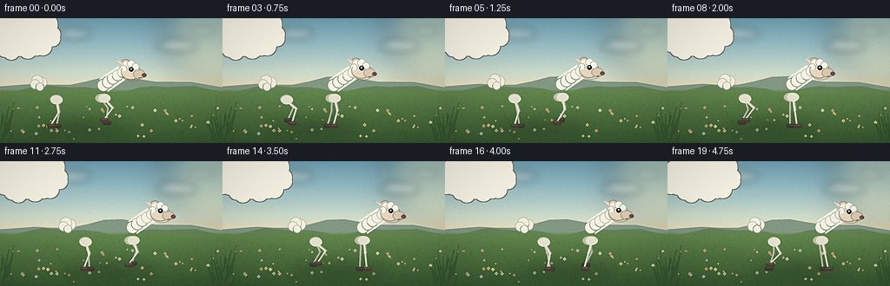
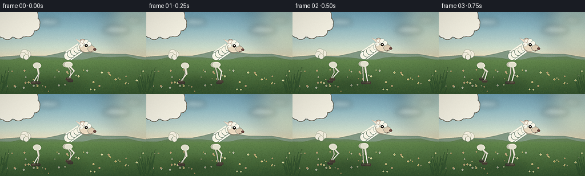

CODING AGENTS AS PIXEL WORLD MODELS
traex/DeepSeek-V4.1-Flash · instance_preservation_0015
点击播放 · 原生 RGB 像素
逐轮保存的候选
回放视频、检查图与代码变化。
每份候选均可单独播放。实际图片检查记录在下方工具轨迹中。
候选 01播放与检查图
点击播放 · 原生 RGB 像素

展开代码变化
--- 上一保存版本
+++ 本次保存版本
@@ -0,0 +1,560 @@
+from __future__ import annotations
+
+import math
+from pathlib import Path
+
+import numpy as np
+from PIL import Image, ImageChops, ImageDraw, ImageEnhance, ImageFilter
+
+import artifact_io
+
+
+ROOT = Path(__file__).resolve().parent
+WIDTH = 256
+HEIGHT = 144
+FRAMES = 20
+FPS = 4.0
+SS = 4
+W = WIDTH * SS
+H = HEIGHT * SS
+TAU = math.tau
+
+
+def mix(a, b, t):
+ return tuple(int(round(a[i] + (b[i] - a[i]) * t)) for i in range(3))
+
+
+def vertical_gradient(stops):
+ rows = np.zeros((H, 3), dtype=np.float32)
+ positions = np.array([p for p, _ in stops], dtype=np.float32)
+ colors = np.array([c for _, c in stops], dtype=np.float32)
+ ys = np.arange(H, dtype=np.float32) / max(1, H - 1)
+ for channel in range(3):
+ rows[:, channel] = np.interp(ys, positions, colors[:, channel])
+ return np.repeat(rows[:, None, :], W, axis=1).astype(np.uint8)
+
+
+def add_noise_texture(image, amount=3.0, scale=3):
+ small_w = max(2, W // scale)
+ small_h = max(2, H // scale)
+ rng = np.random.default_rng(4917)
+ noise = rng.normal(0.0, 1.0, (small_h, small_w)).astype(np.float32)
+ noise = np.clip(noise * 0.5 + 0.5, 0.0, 1.0)
+ noise_img = Image.fromarray((noise * 255).astype(np.uint8), "L")
+ noise_img = noise_img.resize((W, H), Image.Resampling.BICUBIC)
+ arr = np.asarray(image).astype(np.float32)
+ n = (np.asarray(noise_img).astype(np.float32) - 127.5) / 127.5
+ arr += n[:, :, None] * amount
+ return Image.fromarray(np.clip(arr, 0, 255).astype(np.uint8), "RGB")
+
+
+def make_background():
+ sky = vertical_gradient(
+ [
+ (0.00, (116, 160, 178)),
+ (0.20, (151, 188, 196)),
+ (0.43, (204, 218, 204)),
+ (0.56, (232, 221, 190)),
+ (1.00, (87, 119, 70)),
+ ]
+ )
+ bg = Image.fromarray(sky, "RGB")
+ glow = Image.new("RGBA", (W, H), (0, 0, 0, 0))
+ gd = ImageDraw.Draw(glow)
+ gd.ellipse((W - 260, -160, W + 210, 310), fill=(255, 239, 181, 78))
+ glow = glow.filter(ImageFilter.GaussianBlur(70))
+ bg = Image.alpha_composite(bg.convert("RGBA"), glow)
+
+ clouds = Image.new("RGBA", (W, H), (0, 0, 0, 0))
+ cd = ImageDraw.Draw(clouds)
+ cloud_specs = [
+ (55, 82, 205, 52, 82),
+ (255, 52, 165, 43, 70),
+ (720, 105, 190, 47, 76),
+ (875, 45, 120, 32, 52),
+ ]
+ for cx, cy, cw, ch, alpha in cloud_specs:
+ cd.ellipse((cx, cy, cx + cw, cy + ch), fill=(255, 253, 241, alpha))
+ cd.ellipse(
+ (cx + cw * 0.15, cy - ch * 0.25, cx + cw * 0.63, cy + ch * 0.75),
+ fill=(255, 253, 241, alpha),
+ )
+ cd.ellipse(
+ (cx + cw * 0.48, cy - ch * 0.12, cx + cw * 0.93, cy + ch * 0.82),
+ fill=(255, 251, 236, alpha),
+ )
+ clouds = clouds.filter(ImageFilter.GaussianBlur(18))
+ bg = Image.alpha_composite(bg, clouds)
+
+ hills = Image.new("RGBA", (W, H), (0, 0, 0, 0))
+ hd = ImageDraw.Draw(hills)
+ far_points = [(0, 313)]
+ for x in range(0, W + 80, 80):
+ y = 295 + 19 * math.sin(x * 0.007 + 0.7) + 10 * math.sin(x * 0.017 + 2.2)
+ far_points.append((x, int(y)))
+ far_points += [(W, 340), (W, H), (0, H)]
+ hd.polygon(far_points, fill=(132, 153, 133, 255))
+
+ mid_points = [(0, 330)]
+ for x in range(0, W + 64, 64):
+ y = 323 + 12 * math.sin(x * 0.012 + 1.5) + 7 * math.sin(x * 0.026)
+ mid_points.append((x, int(y)))
+ mid_points += [(W, 370), (W, H), (0, H)]
+ hd.polygon(mid_points, fill=(105, 132, 94, 255))
+ hills = hills.filter(ImageFilter.GaussianBlur(1.0))
+ bg = Image.alpha_composite(bg, hills)
+ bg = bg.convert("RGB")
+
+ meadow_top = 326
+ meadow_arr = np.asarray(bg).astype(np.float32)
+ for y in range(meadow_top, H):
+ t = (y - meadow_top) / max(1, H - meadow_top)
+ color = np.array(
+ [
+ 105 + (58 - 105) * t,
+ 139 + (88 - 139) * t,
+ 84 + (52 - 84) * t,
+ ],
+ dtype=np.float32,
+ )
+ edge = min(1.0, (y - meadow_top) / 18.0)
+ meadow_arr[y] = meadow_arr[y] * (1.0 - edge) + color * edge
+ bg = Image.fromarray(np.clip(meadow_arr, 0, 255).astype(np.uint8), "RGB")
+ bg = add_noise_texture(bg, amount=4.0, scale=2)
+
+ texture = Image.new("RGBA", (W, H), (0, 0, 0, 0))
+ td = ImageDraw.Draw(texture)
+ rng = np.random.default_rng(18273)
+
+ # Fine meadow fibers, denser near the horizon.
+ for _ in range(3200):
+ x = int(rng.integers(0, W))
+ y = int(rng.integers(330, H))
+ depth = (y - 330) / (H - 330)
+ length = int(rng.integers(3, 9) * (0.55 + depth))
+ lean = int(rng.integers(-3, 4))
+ palette = [
+ (78, 115, 62, int(55 + 45 * depth)),
+ (117, 145, 76, int(40 + 35 * depth)),
+ (151, 157, 85, int(32 + 30 * depth)),
+ (61, 96, 57, int(45 + 40 * depth)),
+ ]
+ color = palette[int(rng.integers(0, len(palette)))]
+ td.line((x, y, x + lean, y - length), fill=color, width=2)
+
+ # A few pale wildflowers add depth without competing with the sheep.
+ for _ in range(52):
+ x = int(rng.integers(20, W - 20))
+ y = int(rng.integers(405, H - 15))
+ radius = int(rng.integers(2, 5))
+ petal = [
+ (245, 239, 192, 190),
+ (240, 214, 159, 185),
+ (218, 213, 202, 170),
+ (231, 187, 151, 160),
+ ][int(rng.integers(0, 4))]
+ td.line((x, y + radius, x + 1, y + radius + 9), fill=(68, 104, 58, 130), width=1)
+ for angle in range(0, 360, 90):
+ ox = int(math.cos(math.radians(angle)) * radius)
+ oy = int(math.sin(math.radians(angle)) * radius)
+ td.ellipse((x + ox - radius, y + oy - radius, x + ox + radius, y + oy + radius), fill=petal)
+ td.ellipse((x - 1, y - 1, x + 2, y + 2), fill=(195, 144, 55, 180))
+
+ # Grass tufts frame the lower corners and help sell scale.
+ for cx, count, side in [(25, 18, 1), (W - 20, 17, -1)]:
+ for _ in range(count):
+ x = cx + int(rng.integers(-25, 26))
+ y = int(rng.integers(H - 100, H + 4))
+ h = int(rng.integers(35, 95))
+ bend = side * int(rng.integers(8, 28))
+ td.line(
+ (x, y, x + bend // 2, y - h // 2, x + bend, y - h),
+ fill=(44, 76, 46, int(rng.integers(100, 160))),
+ width=int(rng.integers(3, 6)),
+ joint="curve",
+ )
+
+ texture = texture.filter(ImageFilter.GaussianBlur(0.65))
+ bg = Image.alpha_composite(bg.convert("RGBA"), texture)
+ return bg.convert("RGB")
+
+
+def limb_joint(ax, ay, tx, ty, upper, lower, bend_sign=-1.0):
+ dx = tx - ax
+ dy = ty - ay
+ distance = max(1.0, math.hypot(dx, dy))
+ direction_x = dx / distance
+ direction_y = dy / distance
+ along = (upper * upper - lower * lower + distance * distance) / (2.0 * distance)
+ height = math.sqrt(max(0.0, upper * upper - along * along))
+ base_x = ax + direction_x * along
+ base_y = ay + direction_y * along
+ perp_x = -direction_y * bend_sign
+ perp_y = direction_x * bend_sign
+ return base_x + perp_x * height, base_y + perp_y * height
+
+
+def draw_leg(draw, ax, ay, tx, ty, phase, near, body_center_x, ground_y):
+ upper = 14.0 * SS
+ lower = 17.5 * SS
+ jx, jy = limb_joint(ax, ay, tx, ty, upper, lower, -1.0 if near else -0.72)
+
+ if near:
+ leg_color = (224, 220, 205, 255)
+ shade_color = (178, 174, 157, 170)
+ hoof_color = (75, 67, 58, 255)
+ widths = (10, 8)
+ else:
+ leg_color = (190, 187, 172, 245)
+ shade_color = (140, 139, 128, 145)
+ hoof_color = (64, 59, 53, 245)
+ widths = (8, 7)
+
+ draw.line((ax, ay, jx, jy), fill=leg_color, width=widths[0], joint="curve")
+ draw.line((jx, jy, tx, ty), fill=leg_color, width=widths[1], joint="curve")
+ draw.ellipse((jx - widths[0] / 2, jy - widths[0] / 2, jx + widths[0] / 2, jy + widths[0] / 2), fill=leg_color)
+ draw.line((ax + 2 * SS, ay, jx + 2 * SS, jy), fill=shade_color, width=max(2, widths[0] // 3))
+ draw.line((jx + 1 * SS, jy, tx + 1 * SS, ty), fill=shade_color, width=max(2, widths[1] // 3))
+
+ # Small wool cuff where the leg disappears into the body.
+ cuff_y = ay - 1 * SS
+ draw.ellipse(
+ (ax - 7 * SS, cuff_y - 5 * SS, ax + 7 * SS, cuff_y + 5 * SS),
+ fill=(235, 231, 216, 235) if near else (198, 194, 179, 225),
+ )
+
+ hoof_len = 10 * SS
+ hoof_h = 5 * SS
+ draw.rounded_rectangle(
+ (tx - hoof_len * 0.42, ty - hoof_h * 0.45, tx + hoof_len * 0.58, ty + hoof_h * 0.55),
+ radius=2 * SS,
+ fill=hoof_color,
+ )
+ draw.line(
+ (tx - 2 * SS, ty - 1 * SS, tx + 4 * SS, ty - 1 * SS),
+ fill=(117, 104, 88, 180) if near else (92, 85, 74, 150),
+ width=SS,
+ )
+
+
+def make_wool_mask(center_x, center_y, rng):
+ mask = Image.new("L", (W, H), 0)
+ md = ImageDraw.Draw(mask)
+ cx = center_x
+ cy = center_y
+ md.ellipse((cx - 39 * SS, cy - 20 * SS, cx + 39 * SS, cy + 20 * SS), fill=255)
+ md.ellipse((cx - 31 * SS, cy - 25 * SS, cx + 30 * SS, cy + 16 * SS), fill=255)
+
+ puff_count = 24
+ for i in range(puff_count):
+ angle = TAU * i / puff_count
+ rx = 37.0 + 2.2 * math.sin(i * 2.1)
+ ry = 19.0 + 1.7 * math.cos(i * 1.7)
+ px = cx + math.cos(angle) * rx * SS
+ py = cy + math.sin(angle) * ry * SS
+ radius = (8.5 + 2.0 * math.sin(i * 2.7 + 0.4)) * SS
+ md.ellipse((px - radius, py - radius, px + radius, py + radius), fill=255)
+
+ # The shoulder rises slightly, as in a fleece that has not been shorn.
+ md.ellipse((cx + 17 * SS, cy - 26 * SS, cx + 43 * SS, cy + 3 * SS), fill=255)
+ return mask
+
+
+def draw_sheep(base, t, x, ground_y=124.0):
+ rng = np.random.default_rng(773)
+ cycle = 1.45
+ walk_phase = (t / cycle) % 1.0
+ bob = 0.9 * math.sin(TAU * walk_phase * 2.0 + 0.35)
+ cy = 75.0 + bob
+ cx = x
+
+ # Soft body shadow and small contact shadows.
+ shadow = Image.new("RGBA", (W, H), (0, 0, 0, 0))
+ sd = ImageDraw.Draw(shadow)
+ sd.ellipse(
+ (
+ (cx - 53) * SS,
+ (ground_y - 4) * SS,
+ (cx + 55) * SS,
+ (ground_y + 7) * SS,
+ ),
+ fill=(31, 50, 34, 90),
+ )
+ for offset, phase in [(-28, 0.0), (24, 0.5), (-22, 0.55), (29, 0.05)]:
+ local = (walk_phase + phase) % 1.0
+ lift = max(0.0, math.cos(TAU * local)) ** 1.6
+ alpha = int(50 * (1.0 - 0.75 * lift))
+ sx = (cx + offset + 3 * math.sin(TAU * local)) * SS
+ sd.ellipse(
+ (sx - 8 * SS, (ground_y - 1) * SS, sx + 8 * SS, (ground_y + 3) * SS),
+ fill=(31, 48, 31, alpha),
+ )
+ shadow = shadow.filter(ImageFilter.GaussianBlur(8 * SS))
+ base.alpha_composite(shadow)
+
+ layer = Image.new("RGBA", (W, H), (0, 0, 0, 0))
+ ld = ImageDraw.Draw(layer)
+
+ leg_specs = [
+ (-27, 19, 0.50, False, 0.02),
+ (25, 18, 0.13, False, 0.02),
+ (-28, 20, 0.63, True, 0.00),
+ (27, 18, 0.00, True, 0.00),
+ ]
+ for dx, dy, phase, near, lift_bias in leg_specs:
+ local = (walk_phase + phase) % 1.0
+ stride = (8.0 if near else 7.0) * SS
+ hx = (cx + dx) * SS + stride * math.sin(TAU * local)
+ lift = max(0.0, math.cos(TAU * local)) ** 1.55
+ hy = (ground_y - lift * 6.5 + lift_bias) * SS
+ ax = (cx + dx + (1.0 if near else -0.5)) * SS
+ ay = (cy + dy) * SS
+ draw_leg(ld, ax, ay, hx, hy, local, near, cx, ground_y)
+
+ # Tail sits behind the fleece.
+ tail_wag = 1.4 * math.sin(TAU * walk_phase + 0.9)
+ tail_x = (cx - 39) * SS
+ tail_y = (cy - 2) * SS
+ for i, (ox, oy, radius) in enumerate(
+ [(-6, 1, 7), (-11, -1, 7), (-14, 3, 6), (-9, 6, 5)]
+ ):
+ px = tail_x + (ox + tail_wag * (i + 1) * 0.45) * SS
+ py = tail_y + oy * SS
+ ld.ellipse(
+ (px - radius * SS, py - radius * SS, px + radius * SS, py + radius * SS),
+ fill=(241, 237, 222, 255),
+ outline=(167, 164, 149, 110),
+ width=SS,
+ )
+
+ body_mask = make_wool_mask(cx, cy, rng)
+ body = Image.new("RGBA", (W, H), (0, 0, 0, 0))
+ bd = ImageDraw.Draw(body)
+ bd.rectangle((0, 0, W, H), fill=(246, 243, 230, 255))
+ # Warm upper-left light and cool shaded underside.
+ bd.ellipse(
+ (
+ (cx - 34) * SS,
+ (cy - 21) * SS,
+ (cx + 25) * SS,
+ (cy + 11) * SS,
+ ),
+ fill=(255, 253, 241, 165),
+ )
+ bd.ellipse(
+ (
+ (cx - 36) * SS,
+ (cy + 5) * SS,
+ (cx + 39) * SS,
+ (cy + 24) * SS,
+ ),
+ fill=(174, 176, 163, 48),
+ )
+ bd.ellipse(
+ (
+ (cx + 17) * SS,
+ (cy - 12) * SS,
+ (cx + 41) * SS,
+ (cy + 19) * SS,
+ ),
+ fill=(184, 183, 168, 38),
+ )
+ body.putalpha(body_mask)
+
+ # Fine curled fleece marks, clipped exactly to the body silhouette.
+ texture = Image.new("RGBA", (W, H), (0, 0, 0, 0))
+ td = ImageDraw.Draw(texture)
+ for _ in range(112):
+ angle = rng.uniform(0, TAU)
+ radius = math.sqrt(rng.uniform(0.05, 0.96))
+ lx = math.cos(angle) * 34.0 * radius
+ ly = math.sin(angle) * 17.0 * radius
+ px = (cx + lx) * SS
+ py = (cy + ly) * SS
+ rw = rng.uniform(2.3, 5.8) * SS
+ rh = rng.uniform(1.5, 3.8) * SS
+ start = rng.uniform(0, 360)
+ extent = rng.uniform(100, 260)
+ tone = int(rng.integers(0, 3))
+ color = [
+ (184, 182, 169, 82),
+ (218, 215, 200, 95),
+ (255, 255, 248, 105),
+ ][tone]
+ td.arc((px - rw, py - rh, px + rw, py + rh), start, start + extent, fill=color, width=SS)
+ texture.putalpha(ImageChops.multiply(texture.getchannel("A"), body_mask))
+ body = Image.alpha_composite(body, texture)
+
+ expanded = body_mask.filter(ImageFilter.MaxFilter(9))
+ ring = ImageChops.subtract(expanded, body_mask)
+ outline = Image.new("RGBA", (W, H), (124, 124, 112, 95))
+ outline.putalpha(ring)
+ layer.alpha_composite(outline)
+ layer.alpha_composite(body)
+
+ # Neck is built from overlapping wool puffs, then the face sits in front.
+ neck_top = (cx + 49, cy - 13)
+ neck_bottom = (cx + 27, cy + 2)
+ nd = ImageDraw.Draw(layer)
+ nd.line(
+ (neck_bottom[0] * SS, neck_bottom[1] * SS, neck_top[0] * SS, neck_top[1] * SS),
+ fill=(243, 239, 225, 255),
+ width=18 * SS,
+ )
+ for u in np.linspace(0.0, 1.0, 5):
+ px = (neck_bottom[0] + (neck_top[0] - neck_bottom[0]) * u) * SS
+ py = (neck_bottom[1] + (neck_top[1] - neck_bottom[1]) * u) * SS
+ rr = (7.5 - 1.2 * u) * SS
+ nd.ellipse(
+ (px - rr, py - rr, px + rr, py + rr),
+ fill=(244, 240, 226, 255),
+ outline=(152, 151, 139, 70),
+ width=SS,
+ )
+
+ head_bob = 1.15 * math.sin(TAU * walk_phase + 0.65)
+ hx = (cx + 57) * SS
+ hy = (cy - 15 + head_bob) * SS
+
+ # Ears: one behind the crown, one visible on the near side.
+ ear_tilt = 0.08 * math.sin(TAU * walk_phase + 1.4)
+ nd.ellipse(
+ (
+ hx - 10 * SS,
+ hy - 14 * SS,
+ hx + 1 * SS,
+ hy - 4 * SS,
+ ),
+ fill=(222, 205, 187, 255),
+ outline=(137, 119, 105, 180),
+ width=SS,
+ )
+ nd.polygon(
+ [
+ (hx - 9 * SS, hy - 11 * SS),
+ (hx - 17 * SS, hy - 14 * SS + ear_tilt * SS),
+ (hx - 8 * SS, hy - 5 * SS),
+ ],
+ fill=(231, 218, 201, 255),
+ outline=(142, 124, 110, 170),
+ )
+
+ # Face: cream muzzle and forehead, with a little wool cap.
+ face = Image.new("RGBA", (W, H), (0, 0, 0, 0))
+ fd = ImageDraw.Draw(face)
+ fd.ellipse(
+ (hx - 10 * SS, hy - 9 * SS, hx + 13 * SS, hy + 10 * SS),
+ fill=(230, 215, 191, 255),
+ outline=(129, 113, 96, 170),
+ width=SS,
+ )
+ fd.ellipse(
+ (hx + 4 * SS, hy - 2 * SS, hx + 18 * SS, hy + 9 * SS),
+ fill=(218, 201, 177, 255),
+ outline=(129, 113, 96, 130),
+ width=SS,
+ )
+ for ox, oy, rr in [(-4, -7, 5.2), (2, -8, 5.0), (7, -5, 4.4), (-7, -3, 4.2)]:
+ fd.ellipse(
+ (
+ hx + (ox - rr) * SS,
+ hy + (oy - rr) * SS,
+ hx + (ox + rr) * SS,
+ hy + (oy + rr) * SS,
+ ),
+ fill=(247, 243, 230, 255),
+ outline=(153, 148, 134, 65),
+ width=SS,
+ )
+
+ # Eye, nose and mouth are deliberately compact at this resolution.
+ eye_x = hx + 2.0 * SS
+ eye_y = hy - 2.0 * SS
+ fd.ellipse(
+ (eye_x - 2.7 * SS, eye_y - 2.7 * SS, eye_x + 2.7 * SS, eye_y + 2.7 * SS),
+ fill=(43, 37, 31, 255),
+ )
+ fd.ellipse(
+ (eye_x - 1.0 * SS, eye_y - 1.5 * SS, eye_x + 0.7 * SS, eye_y + 0.3 * SS),
+ fill=(245, 243, 226, 240),
+ )
+ fd.ellipse(
+ (hx + 14 * SS, hy + 2.4 * SS, hx + 19.5 * SS, hy + 7.0 * SS),
+ fill=(106, 75, 68, 235),
+ )
+ fd.line(
+ (hx + 15 * SS, hy + 7.2 * SS, hx + 10 * SS, hy + 8.2 * SS),
+ fill=(94, 69, 60, 215),
+ width=int(1.15 * SS),
+ )
+ layer.alpha_composite(face)
+
+ # Ear and cheek outline on the near side.
+ nd.arc(
+ (
+ hx - 10 * SS,
+ hy - 10 * SS,
+ hx + 17 * SS,
+ hy + 12 * SS,
+ ),
+ 28,
+ 205,
+ fill=(135, 117, 98, 125),
+ width=SS,
+ )
+
+ base.alpha_composite(layer)
+
+ # Very light footfall dust gives the four-beat rhythm a readable accent.
+ dust = Image.new("RGBA", (W, H), (0, 0, 0, 0))
+ dd = ImageDraw.Draw(dust)
+ for phase, offset in [(0.0, 27), (0.5, -28)]:
+ local = (walk_phase + phase) % 1.0
+ if local < 0.2 or local > 0.88:
+ strength = max(0.0, math.sin((local - 0.82) / 0.38 * math.pi)) if local > 0.82 else max(0.0, math.sin(local / 0.2 * math.pi))
+ for j in range(3):
+ px = (cx + offset - 7 - j * 4) * SS
+ py = (ground_y - 1.5 - j * 1.2) * SS
+ rr = (2.5 + j * 1.2) * SS
+ dd.ellipse(
+ (px - rr, py - rr, px + rr, py + rr),
+ fill=(218, 207, 173, int(20 * strength)),
+ )
+ dust = dust.filter(ImageFilter.GaussianBlur(4 * SS))
+ base.alpha_composite(dust)
+
+
+def color_finish(image, frame_index):
+ image = image.resize((WIDTH, HEIGHT), Image.Resampling.LANCZOS)
+ image = image.filter(ImageFilter.UnsharpMask(radius=1.0, percent=58, threshold=2))
+ image = ImageEnhance.Contrast(image).enhance(1.035)
+ image = ImageEnhance.Color(image).enhance(1.035)
+
+ arr = np.asarray(image).astype(np.float32)
+ yy, xx = np.mgrid[0:HEIGHT, 0:WIDTH]
+ nx = (xx - WIDTH * 0.52) / (WIDTH * 0.62)
+ ny = (yy - HEIGHT * 0.54) / (HEIGHT * 0.72)
+ vignette = np.clip(1.0 - 0.10 * (nx * nx + ny * ny), 0.86, 1.0)
+ arr *= vignette[:, :, None]
+
+ rng = np.random.default_rng(9100 + frame_index)
+ grain = rng.normal(0.0, 0.72, (HEIGHT, WIDTH, 1))
+ arr += grain
+ return np.clip(arr, 0, 255).astype(np.uint8)
+
+
+def main():
+ background = make_background()
+ frames = []
+ for index in range(FRAMES):
+ t = index / FPS
+ x = 92.0 + 3.05 * index
+ scene = background.convert("RGBA")
+ draw_sheep(scene, t, x)
+ frames.append(color_finish(scene.convert("RGB"), index))
+ frames = np.stack(frames, axis=0)
+ artifact_io.save(frames, ROOT)
+
+
+if __name__ == "__main__":
+ main()
候选 02播放与检查图
点击播放 · 原生 RGB 像素


展开代码变化
--- 上一保存版本
+++ 本次保存版本
@@ -194,6 +194,22 @@
return base_x + perp_x * height, base_y + perp_y * height
+def smoothstep(value):
+ value = min(1.0, max(0.0, value))
+ return value * value * (3.0 - 2.0 * value)
+
+
+def planted_foot(phase, stride, duty=0.72):
+ """Return horizontal offset and swing lift for a foot at a cycle phase."""
+ phase %= 1.0
+ if phase < duty:
+ offset = stride * (0.5 - phase / duty)
+ return offset, 0.0
+ swing = (phase - duty) / (1.0 - duty)
+ offset = stride * (-0.5 + smoothstep(swing))
+ return offset, math.sin(math.pi * swing)
+
+
def draw_leg(draw, ax, ay, tx, ty, phase, near, body_center_x, ground_y):
upper = 14.0 * SS
lower = 17.5 * SS
@@ -264,7 +280,7 @@
rng = np.random.default_rng(773)
cycle = 1.45
walk_phase = (t / cycle) % 1.0
- bob = 0.9 * math.sin(TAU * walk_phase * 2.0 + 0.35)
+ bob = 0.75 * math.sin(TAU * walk_phase * 2.0 + 0.35)
cy = 75.0 + bob
cx = x
@@ -280,11 +296,11 @@
),
fill=(31, 50, 34, 90),
)
- for offset, phase in [(-28, 0.0), (24, 0.5), (-22, 0.55), (29, 0.05)]:
- local = (walk_phase + phase) % 1.0
- lift = max(0.0, math.cos(TAU * local)) ** 1.6
- alpha = int(50 * (1.0 - 0.75 * lift))
- sx = (cx + offset + 3 * math.sin(TAU * local)) * SS
+ for offset, phase in [(-28, 0.0), (25, 0.25), (-27, 0.5), (27, 0.75)]:
+ local = (walk_phase - phase) % 1.0
+ offset_x, lift = planted_foot(local, 11.0)
+ alpha = int(45 * max(0.0, 1.0 - local / 0.16))
+ sx = (cx + offset + offset_x) * SS
sd.ellipse(
(sx - 8 * SS, (ground_y - 1) * SS, sx + 8 * SS, (ground_y + 3) * SS),
fill=(31, 48, 31, alpha),
@@ -297,16 +313,15 @@
leg_specs = [
(-27, 19, 0.50, False, 0.02),
- (25, 18, 0.13, False, 0.02),
- (-28, 20, 0.63, True, 0.00),
- (27, 18, 0.00, True, 0.00),
+ (25, 18, 0.75, False, 0.02),
+ (-28, 20, 0.00, True, 0.00),
+ (27, 18, 0.25, True, 0.00),
]
for dx, dy, phase, near, lift_bias in leg_specs:
- local = (walk_phase + phase) % 1.0
- stride = (8.0 if near else 7.0) * SS
- hx = (cx + dx) * SS + stride * math.sin(TAU * local)
- lift = max(0.0, math.cos(TAU * local)) ** 1.55
- hy = (ground_y - lift * 6.5 + lift_bias) * SS
+ local = (walk_phase - phase) % 1.0
+ offset_x, lift = planted_foot(local, 11.0)
+ hx = (cx + dx) * SS + offset_x * SS
+ hy = (ground_y - lift * 7.0 + lift_bias) * SS
ax = (cx + dx + (1.0 if near else -0.5)) * SS
ay = (cy + dy) * SS
draw_leg(ld, ax, ay, hx, hy, local, near, cx, ground_y)
@@ -508,12 +523,12 @@
# Very light footfall dust gives the four-beat rhythm a readable accent.
dust = Image.new("RGBA", (W, H), (0, 0, 0, 0))
dd = ImageDraw.Draw(dust)
- for phase, offset in [(0.0, 27), (0.5, -28)]:
- local = (walk_phase + phase) % 1.0
- if local < 0.2 or local > 0.88:
- strength = max(0.0, math.sin((local - 0.82) / 0.38 * math.pi)) if local > 0.82 else max(0.0, math.sin(local / 0.2 * math.pi))
+ for phase, offset in [(0.0, 27), (0.25, -28), (0.5, 27), (0.75, -27)]:
+ local = (walk_phase - phase) % 1.0
+ if local < 0.18:
+ strength = max(0.0, math.sin(local / 0.18 * math.pi))
for j in range(3):
- px = (cx + offset - 7 - j * 4) * SS
+ px = (cx + offset - 4 - j * 3) * SS
py = (ground_y - 1.5 - j * 1.2) * SS
rr = (2.5 + j * 1.2) * SS
dd.ellipse(
@@ -546,9 +561,10 @@
def main():
background = make_background()
frames = []
+ speed = 11.0 / 1.45
for index in range(FRAMES):
t = index / FPS
- x = 92.0 + 3.05 * index
+ x = 95.0 + speed * t
scene = background.convert("RGBA")
draw_sheep(scene, t, x)
frames.append(color_finish(scene.convert("RGB"), index))
候选 03播放与检查图
可观测工具轨迹
实际执行的命令与返回图片。
命令 1exit 0
/bin/bash -c "pwd && rg --files -g 'prompt.txt' -g 'GENERATION_RULES.md' -g 'task_spec.json' -g '"'!node_modules'"'"
命令 2exit 0
/bin/bash -c "sed -n '1,240p' prompt.txt"
命令 3exit 0
/bin/bash -c "sed -n '1,280p' GENERATION_RULES.md"
命令 4exit 0
/bin/bash -c 'cat task_spec.json'
命令 5exit 0
/bin/bash -c "find . -maxdepth 2 -type f -printf '%p\\n' | sort | sed -n '1,240p'"
命令 6exit 0
/bin/bash -c "sed -n '1,280p' artifact_io.py"
命令 7exit 0
/bin/bash -c "sed -n '1,240p' player_template.html"
命令 8exit 0
/bin/bash -c "python - <<'PY'
import PIL, numpy
print('PIL', PIL.__version__)
print('numpy', numpy.__version__)
try:
import imageio; print('imageio', imageio.__version__)
except Exception as e: print('no imageio', e)
try:
import cv2; print('cv2', cv2.__version__)
except Exception as e: print('no cv2', e)
PY"命令 9exit 1
/bin/bash -c 'python generate.py'
命令 10exit 0
/bin/bash -c 'python generate.py'
命令 11exit 0
/bin/bash -c "python - <<'PY'
from PIL import Image, ImageOps
import numpy as np
for fi in [0,5,10,15,19]:
im=Image.open(f'frames/{fi:02d}.png').convert('L')
im=ImageOps.autocontrast(im).resize((96,54), Image.Resampling.LANCZOS)
a=np.asarray(im)
chars=' .:-=+*#%@'
print('\\nFRAME',fi)
for row in a:
print(''.join(chars[min(9,int(v)*10//256)] for v in row))
PY"命令 12exit 0
/bin/bash -c "python - <<'PY'
from PIL import Image
im=Image.open('frames/05.png').convert('RGB').crop((55,35,210,138)).resize((78,52), Image.Resampling.LANCZOS)
pix=im.load()
for y in range(im.height):
print(''.join(f'\\x1b[48;2;{pix[x,y][0]};{pix[x,y][1]};{pix[x,y][2]}m ' for x in range(im.width))+'\\x1b[0m')
PY"命令 13exit 0
/bin/bash -c "python - <<'PY'
import cv2, numpy as np
im=cv2.imread('frames/05.png')
# Difference against first frame outside moving location isn't background because sheep there too.
# Sobel/edge map of sheep crop.
g=cv2.cvtColor(im, cv2.COLOR_BGR2GRAY)
e=cv2.Canny(g,35,90)
e=cv2.dilate(e,np.ones((2,2),np.uint8))
# crop sheep approx x70:210 y45:132
c=e[42:134,60:220]
c=cv2.resize(c,(80,46),interpolation=cv2.INTER_AREA)
chars=' .:-=+*#%@'
for row in c:
print(''.join(chars[min(9,int(v)*10//256)] for v in row))
PY"命令 14exit 0
/bin/bash -c 'command -v chafa || true; command -v viu || true; command -v jp2 || true; command -v ffmpeg || true; command -v chromium || command -v google-chrome || true'
命令 15exit 0
/bin/bash -c "python - <<'PY'
from PIL import Image, ImageOps
import numpy as np
for fi in [0,5,10,15]:
im=Image.open(f'frames/{fi:02d}.png').convert('L').crop((45,42,220,138)).resize((100,55),Image.Resampling.LANCZOS)
im=ImageOps.autocontrast(im)
a=np.asarray(im)
chars=' .:-=+*#%@'
print('\\nFRAME',fi)
for row in a:
print(''.join(chars[min(9,int(v)*10//256)] for v in row))
PY"命令 16exit 0
/bin/bash -c 'python generate.py'
命令 17exit 0
/bin/bash -c "python - <<'PY'
import numpy as np
from PIL import Image
from pathlib import Path
frames=[np.asarray(Image.open(p).convert('RGB')) for p in sorted(Path('frames').glob('*.png'))]
print('frames',len(frames),'shape',frames[0].shape,'dtype',frames[0].dtype)
for i in [0,1,5,10,15,19]:
a=frames[i]
print(i,'mean',a.mean(axis=(0,1)).round(1),'std',a.std(axis=(0,1)).round(1),'range',a.min(),a.max())
# Motion is expected in the sheep region; background should remain stable.
d=np.abs(frames[0].astype(int)-frames[-1].astype(int))
print('changed pixels first/last',np.count_nonzero(d.max(2)>3),'/',256*144)
# Verify the full visual is not blank and has good tonal spread.
lum=np.dot(frames[10][...,:3],[.2126,.7152,.0722])
print('luma percentiles',np.percentile(lum,[1,5,50,95,99]).round(1))
PY
ls -lh pixels.npz index.html inspection.png transition_check.png
find frames -maxdepth 1 -name '*.png' | wc -l"命令 18exit 0
/bin/bash -c "python - <<'PY'
from pathlib import Path
from PIL import Image
import numpy as np, json, base64, re
spec=json.loads(Path('task_spec.json').read_text())
files=sorted(Path('frames').glob('*.png'))
assert len(files)==spec['frames']==20
for p in files:
im=Image.open(p)
assert im.size==(spec['width'],spec['height']) and im.mode=='RGB'
# Verify the packed tensor decodes back to identical frames.
z=np.load('pixels.npz')['pixels']
assert z.shape==(144,256,20)
for i,p in enumerate(files):
a=np.asarray(Image.open(p).convert('RGB'))
packed=(a[:,:,0].astype(np.uint32)<<16)|(a[:,:,1].astype(np.uint32)<<8)|a[:,:,2]
assert np.array_equal(z[:,:,i],packed)
html=Path('index.html').read_text()
assert 'window.__pixelReady=true' in html and 'const DATA=' in html
print('validated:',len(files),'RGB frames, packed tensor and player payload consistent')
PY"命令 19exit 0
/bin/bash -c 'sha256sum pixels.npz inspection.png transition_check.png > .tmp/before.sha256 python generate.py > .tmp/regenerate.log 2>&1 sha256sum -c .tmp/before.sha256 tail -n 2 .tmp/regenerate.log'
命令 20exit 0
/bin/bash -c "python - <<'PY'
from PIL import Image
from pathlib import Path
for i in range(20):
im=Image.open(f'frames/{i:02d}.png').convert('RGB')
assert im.size==(256,144)
print('output files:', sum(1 for p in Path('.').rglob('*') if p.is_file()))
print('video duration:',20/4.0,'seconds')
print('first frame:',Path('frames/00.png').resolve())
print('player:',Path('index.html').resolve())
PY"命令 21exit 0
/bin/bash -c "git status --short 2>/dev/null || true; ls -la | sed -n '1,80p'"
保存候选 3 份；完成命令 21 次；可验证图片返回 0 张。原始 API 响应与完整日志保留在本地。